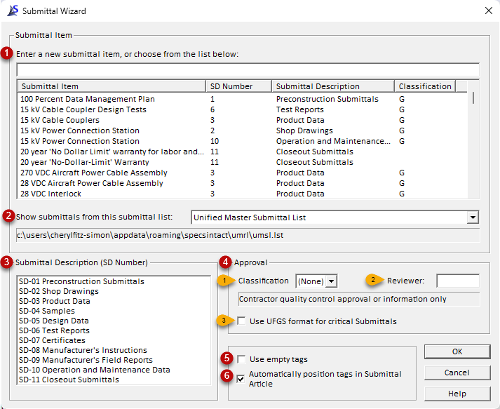
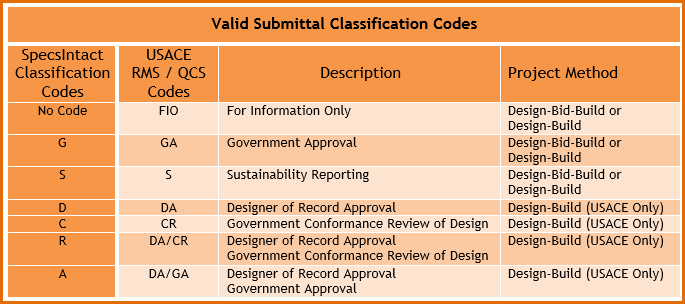

This command can be executed from the SI Editor's Tagsbar.
The Submittal Wizard automates Submittal insertion within the Submittal ArticleAn Article within Part 1 that contains a list of the Submittals Descriptions along with the Submittal Items as used in the section text and Section text, utilizing SUB tags and referencing the Unified Master Submittal List (UMSL)A list of all referenced submittals cited in the Unified Facilities Guide Specifications (UFGS) Master. It is used to generate Submittal Articles when performing Master text processing functions. The UMSL is also used by the SI Explorers Submittal Wizard and Submittal Checking features for standardization to improve efficiency and accuracy, while also aiding in quality assuranceA systematic process insuring the specification meets the specified requirements set by the UFGS Discipline Working Group as documented within the Unified Facilities Guide Specifications (UFGS) Format Standard (UFS 1-300-02) and quality control of critical project elements. This automated tool eliminates manual entry to improve the accuracy of the Submittal Verification Report. Submittals are crucial for design professionals to verify that construction projects align with the contract documents.
 The Submittal Wizard is activated by positioning the cursor within the Submittal Article or the SectionA set of files within the Division of a Master or Job that covers specific aspects of construction text (outside the Submittal Article) and clicking the SUB button on the SI Editor's Tagsbar. When inserting a Submittal (SUB) into the Submittal Article, all its elements (Submittal Descriptions, Submittal Items, Classification Code, Reviewer) are surrounded by the SUB tag and will appear blue.
The Submittal Wizard is activated by positioning the cursor within the Submittal Article or the SectionA set of files within the Division of a Master or Job that covers specific aspects of construction text (outside the Submittal Article) and clicking the SUB button on the SI Editor's Tagsbar. When inserting a Submittal (SUB) into the Submittal Article, all its elements (Submittal Descriptions, Submittal Items, Classification Code, Reviewer) are surrounded by the SUB tag and will appear blue.
 When adding a new Submittal Article to a Section that does not already include a '1.x SUBMITTALS' paragraph, a template for this Article is inserted along with the standard Submittal Note details provided in the 01 33 00 Submittal Procedures Section.
When adding a new Submittal Article to a Section that does not already include a '1.x SUBMITTALS' paragraph, a template for this Article is inserted along with the standard Submittal Note details provided in the 01 33 00 Submittal Procedures Section.
While not recommended, you can disable the Submittal Wizard by navigating to the Tools menu > Options > Edit and unchecking Use Submittal and Section Reference Wizards.

Adding a Submittal outside a Section's Submittal Article will trigger the automatic Check Submittal feature.
Features
- Enter a new submittal item, or choose from the list below - This enables you to either create a new Submittal Item or select one from the Unified Master Submittal List (UMSL), Section, or a connected MasterA group of standard Government agency (Master) Guide Specifications used in the preparation of a Job. When creating a new Submittal Item, the Submittal Wizard provides autocomplete suggestions as you type, drawing from the list of Submittal Items.
- Show Submittals from this submittal list - This allows you to select the Submittal List from the Unified Master Submittal List (UMSL), current Section, or any other connected Masters.
- Submittal Description (SD Number) - Allows you to assign the appropriate Submittal Description to the entered or selected Submittal Item.
- Approval:
- Classification - The default Classification Code is '(None)', signifying 'For Information Only'. Use the drop-down menu to select other options. Refer to the 'Valid Submittal Classification Codes' chart below for detailed descriptions of approved Classification Codes and project methods.
- Reviewer - This allows you to enter a Reviewer code. The Reviewer code is designated for use on Army projects only.
- Use UFGS format for critical Submittals - The UFGS critical Submittal format is used for preparing a Master Section and will only be available when editing a Master Section.
- Use empty tags - Enables manual insertion of Submittals using blank tags instead of selecting from the available options in the window.
- Automatically position tags in Submittal Article - When enabled, this option automatically inserts the Submittal Description or Submittal Item within the Submittal Article. Disabling this option grants the user precise control over the insertion of Submittals within the Submittal Article. This option is enabled by default.
Standard Windows Commands
The OK button will execute and save the selections made.
The Cancel button will close the window without recording any selections or changes entered.
The Help button will open the Help Topic for this window.
Valid Submittal Classification Codes

A Classification Code can be used independently, while a Reviewer Code always requires a corresponding Classification Code.
How To Use This Feature
 To Insert a Submittal Description and Submittal Item Inside The Submittal Article:
To Insert a Submittal Description and Submittal Item Inside The Submittal Article:
- In the SI Editor, navigate to the Submittal Article, then place your cursor on a blank line in the desired location
- Click the SUB button on the Tagsbar to activate the Submittal Wizard
- When the Submittal Wizard opens, perform one of the following:
- Place your cursor in the Enter a new submittal item, or choose from the list below field, and type the new Submittal item
- While entering the new Submittal Item, the system's autocomplete function will provide predictive suggestions based on entries within the Unified Master Submittal List (UMSL) or connected Masters.
- Select the appropriate Submittal Description (SD Number: SD-01 through SD-11)
- If you select a Submittal item from the UMSL, you can override the Submittal Description (SD Number) by selecting a different SD number from the list.
- In the Approval section, perform one of the following:
- For a Submittal not requiring approval, leave the default Classification '(None)' and the Reviewer blank
- For a Submittal that requires approval due to its criticality, complexity, or aesthetic significance, set the Classification to 'G' and select Use UFGS Format for critical Submittals (Masters only)
- For a Submittal that is required for the Sustainability eNotebook to meet federal sustainability mandates, set the Classification to 'S' since these Submittals are for informational purposes only
- Click OK
To Insert a Submittal Item Outside the Submittal Article:
- In the SI Editor, navigate to the desired position and highlight the text
- Once the text is highlighted, click the SUB button on the Tagsbar
- When the confirmation window opens, perform one of the following:
- Select Yes to add the Submittal to the Submittal Article
- Select No if you do not want to add the Submittal to the Submittal Article
- When this option is selected, the text will be surrounded by SUB tags and the confirmation window will close.
- If you selected Yes in Step 3a, the Submittal Wizard will open, then follow Steps 3-5 in the previous instructions above
Additional Learning Tools
 Watch all of the Submittals eLearning module within Chapter 3 - Editing.
Watch all of the Submittals eLearning module within Chapter 3 - Editing.
Users are encouraged to visit the SpecsIntact Website's Support & Help Center for access to all of our User Tools, including Web-Based Help (containing Troubleshooting, Frequently Asked Questions (FAQs), Technical Notes, and Known Problems), eLearning Modules (video tutorials), and printable Guides.